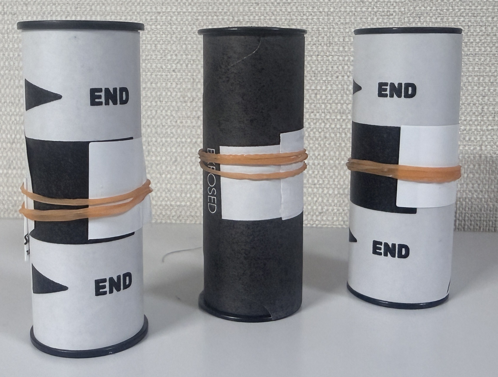
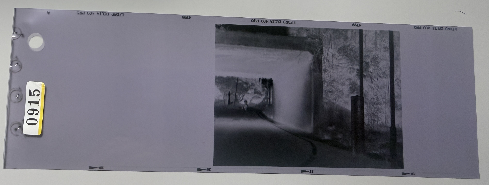

【フィルムの取り扱いについて（35mmと120フィルム】
2026/9/24
35mmについて
フィルムの基本中の基本、ド定番のフィルム35mmについて諸々書き連ねる。
35mmは・・・ってかフィルム全般的に保存をするなら冷蔵庫（冷凍庫）の保存が基本です。
（冷蔵庫と冷凍庫の差は変わらないけど長さの問題ですね、冷凍庫は数年単位の保存に基本使って
冷蔵庫はまぁ数か月って感じの差ですね。なのでよっぽど冷凍庫は使わなと思います。）
あとは冷蔵庫・冷凍庫なんかに入れとくといきなり外界に引きずり出すと結露でフィルムが
色々良くないことになるので、冷蔵庫・冷凍庫から出したら数時間は常温で放置してから使うのが基本です。
筆者は学徒であり基本的金欠と共に生活してたり面倒くさがりな性格も相まって、
撮りきったりしてもすぐには現像やデータ化したりはしてなかったりする。だから数か月間冷蔵庫の中で
熟睡をしているフィルムをざらにあったりしますね・・・。
入れ方とか巻き上げとかは本記事ではあえて書かないがフィルムとは撮る前基本こうなってる。

これを使用して使用後はこうなる。

基本はこれを現像に出します。
現像ってのは↑の状態から

にすることです。これは基本的に”ネガ”って呼ばれるものです。
無論この状態では色もひっくり返ってたりとマトモに見れません。
だからこれをデータ化したりプリントしたりするのです。
現像とかについては下の項で詳細を書きます。
120フィルム（めっちゃ珍しいけど）
120フィルム・・・って聞いても普通の人なら多分一生使わない人もザラにいる珍しい規格です。
写真で出すとこれですね。（使用済みですが・・・）

120フィルムってのは”普通”の35mmよりは大きい規格です。 無論「フィルムが大きい＝感光面が大きくなる」ってことなので画質はいいです。 まぁそもそも画質の面でフィルムとデジタルは同一視してはいけないわけで・・・
まぁそんな話をする場所ではないので話を戻しましょう。 120フィルムはでかいから”画質”とかを重視するときとかに私は使ってますね。 有名な機種とかだとまぁペンタックスの[ペケベン]とかですね。
（ネガはこんな感じです）

因みに、35mmのように120フィルムにはパトローネがありません なので撮りきったら輪ゴムとかでフィルムを止めとく必要があります。 （付属とかでテープがついてるから雑めな人ならそれで十分？） 恐らく（自家現像したことないので推測ですが） ある程度の遊びがあるので大丈夫だと思いますが、 不安なら何かしらで止めとくのをお勧めします。 まぁ120フィルム高いですからね。 念には念を入れるのもしょうがない気がします。 これも35mmと同じで冷蔵庫とかに保存しますね。
購入・現像・データ化・プリントなんかについて
では購入から現像までを解説しましょう。
購入について
基本的に何もわからぬ人たちはカメラのキタムラ・ビックカメラetcそう言った”チェーン店”
で購入することをお勧めします。なぜなら大型店であればフィルムが置いてあります。
小さい店舗でも取り寄せとかできますし、店員とかに詳しく聞くことができますしね。
カラーとかISOとかわからないのであれば店員にぶつけて聞いてみましょう！
どうせこっちの顔なんか覚えてませんしチラ裏にも残りません！
臆することなくガンガン疑問をぶつけましょう！
基本的に”ド定番”な35mmフィルムでコダック・富士フイルムのISO400・カラーとかだと約2000～3000くらいですね。
昔を知ってる人だと驚く価格帯でしょうが昨今の需要低下などが重なって結構高いです。（2026/9/24時点）
それで120フィルムですが・・・富士フイルム-コダック・カラーだとめっちゃ高い・・・ので （2026/9/24時点）
（五個とかで三万とかなんで）やるならモノクロの（普通の人からすると）
無名のメーカーつかって安くする方法もあります。
まぁ基本的に使う人はなかなかのマニアであるのですが・・・
撮影
で撮影です。・・・まぁ撮影方法とかなんて腐り落ちてドロドロになるくらいには沢山ネットに転がってます。
機種とかに寄って結構変わりますから調べて撮影しましょう。
もしわたしのブログが助けになるのであれば是非是非ご参考ください。
現像
で、撮影が終わったら現像とかですね。
基本的に[現像＋データ化・プリント]って感じです。
ここら辺は基本好みなんで自分の好きなようにやってください。
データ化って一言にいっても、CDに焼くタイプかスマホに流し込むかとか、
種類があります。
基本的買った店舗でやってもらいましょう（やってないならやってるところに持って行ってやってもらいましょう）
でこっからは店舗によるのですが現像機とかが店舗にあって、プリントを選択すると
ものの数時間で仕上げてくれる場合もあります。
ですが小型店舗でデータ化とかだと数週間時間がかかります。
そこらへんは各店舗で聞くのが最も確実なので聞いてみよう。
値段は（カラーはやってことないんでわからないんですけど）
35mm・モノクロ・データ化（CD）で大体約3000～くらいで、
120フィルム・モノクロ・データ化（CD）で4000～ですね。（私の場合カメラのキタムラでやりました、近いので）
内訳とかだと大体[現像：2000～][データ化：2000～]みたいな感じです。
プリントとかだとたしか数百円なんでざっくり2000～くらいですね。
だから購入から”写真”としての費用は少なく見積もって5000～ですね。
まぁいけしゃーしゃと出せる金額では（学生だと）ないですが、
是非とも一度でいいのでやってみてください。
駄文でしたがお読みいただきありがとうございました！この記事が貴方のフィルム人生の一助になることを願って！